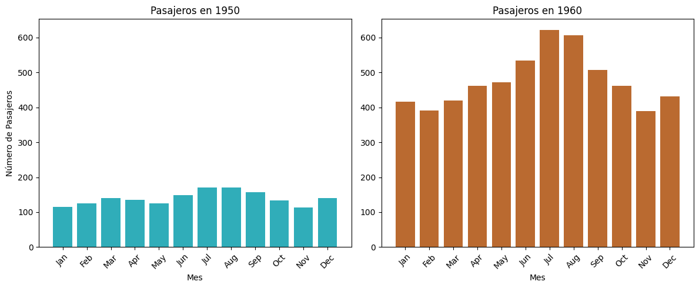

Matplotlib#
matplotlib es una librería que se utiliza principalmente para crear visualizaciones estáticas y dinámicas. La mayoría de las funcionalidades que se verán en esta sección están en el módulo pyplot que es útil para crear una variedad amplia de gráficas. Lo más común es importar la librería y el módulo pyplot, ya que este módulo provee de todo lo necesario para crear, personalizar y manipular gráficas.
# Importar módulo
import matplotlib.pyplot as plt
plt es el nombre por convención, en este sitio se utilizará plt para refererirse a
matplotlib.pyplot.
Figuras y Axes#
En matplotlib se trabaja principalmente con dos clases que sirven para hacer las gráficas:
Figure: Es el objeto que contendrá la gráfica o las gráficas, ya que una sola figura puede contener múltiples gráficas. En una figura con múltiples gráficas, a cada gráfica se le denomina subplot.Por convención se le llama a este objeto fig.
Algunas formas para crear el objeto fig son (más adelante se explicará mejor cada una):
plt.figure(): Crea un objetoFigure.plt.subplots(): Crea una objetoFigurey un objetoAxes.
Axes: Representa todos los elementos de la gráfica, incluyendo la gráfica como tal (datos), ejes, títulos, etiquetas, leyendas, etc. Hay unAxespor cada gráfica, por lo que una solaFigurepuede tener múltiplesAxes.Por convención se le llama a este objeto ax.
Algunas formas para crear el objeto ax son (más adelante se explicará mejor cada una):
plt.axes(): Crea un objetoAxes.plt.subplots(): Crea una objetoFigurey un objetoAxes.
Note
Se puede trabajar directamente con esos objetos (fig y ax), cada objeto tiene distintos métodos para ir agregando elementos a la gráfica. También es posible trabajar de manera implicíta con estos objetos, sin necesidad de declararlos, algunas funciones (Ver Pyplot) crean automáticamente esos objetos.
Algunos elementos de los objetos Figure y Axes:

Interfaces#
En matplotlib existen dos interfaces principales para crear gráficas
Interfaz orienta a objetos: Utiliza directamente los objetos fig y ax y sus métodos para agregar o modificar elementos a la gráfica. Se recomienda esta interfaz si se quiere un mayor control en la personalización de las gráficas.
Interfaz basada en Matlab: Utiliza funciones del módulo
pyploty lleva un control de manera implícita de los últimos objetos fig y ax activos para agregar o modificar elementos en la gráfica. Se recomienda esta interfaz si se quiere crear gráficas de manera rápida con menos opciones de personalización.
Para los ejemplos de esta sección se utilizará el dataset “flights” de la librería Seaborn, además se agrupan los datos por año para las visualizaciones de un solo axes. Para las figuras con más de un axes se crean dos datasets uno para el años 1950 y otro para 1960.
# Cargar el dataset
flights = sns.load_dataset("flights")
# Agrupar datos por año
yearly_data = flights.groupby('year')['passengers'].sum().reset_index()
# Filtrar datos para 1950 y 1960
data_1950 = flights[flights['year'] == 1950]
data_1960 = flights[flights['year'] == 1960]
Interfaz Orienta a Objetos#
En esta Interfaz se crean dos objetos fig y ax. Hay dos formas principales de crear estos objetos.
1. Usar las funciones plt.figure() y plt.axes()#
Se pueden crear los objetos directamente con las funciones plt.figure() y plt.axes() y utilizar los métodos de estos objetos para conformar las gráficas:
# Importar módulo
import matplotlib.pyplot as plt
# Crear objetos
fig = plt.figure()
ax = plt.axes()
# Utilizar métodos de ax y/o fig para agregar elementos a la gráfica
ax.method_name()
...
ax.method_name ()
...
# Imprimir la gráfica
plt.show()
Notas:
fig será una instancia de la clase Figure.
ax será una instancia de la clase Axes.
Las grafícas se crean usando los objetos fig y ax y sus métodos, ver Métodos de Figure y Métodos de Axes.
Se pueden agregar tantos métodos como sean necesarios para personalizar las gráficas.
Al finalizar para mostrar la gráfica usar
plt.show().
Ejemplo:
En este ejemplo se utiliza las funciones plt.figure() y plt.axes() para crear una figura con un axes.
# Crear objetos
fig = plt.figure()
ax = plt.axes()
# Graficar los datos
ax.plot(yearly_data['year'], yearly_data['passengers'], label='Passengers', marker='o', c='#30adb9')
# Añadir elementos a la gráfica
ax.set_xlabel('Año')
ax.set_ylabel('Total de pasajeros')
ax.set_title('Tendencia de total de pasajeros')
ax.legend()
# Show the plot
plt.show()

2. Usar la función plt.subplots()#
Se recomienda utilizar este método porque es más simple y versátil. En este caso la función plt.subplots() retorna un objeto fig y un objecto ax y posteriormente se pueden utilizar los métodos de estos objetos para conformar las gráficas:
# Importar módulo
import matplotlib.pyplot as plt
# Crear objetos
fig, ax = plt.subplots(nrows=1, ncols=1, [sharey], [sharex])
# Utilizar métodos de ax y/o fig para agregar elementos a la gráfica
ax.method_name()
...
ax. method_name ()
...
# Imprimir la gráfica
plt.show()
Notas:
Se puede indicar cuántas filas y columnas de gráficas tendrá la figura, si no se indican se utilizan los valores por default que es 1 en ambos casos, es decir, una figura con una sola gráfica (un solo axes).
fig será una instancia de la clase Figure
Dependiendo de los argumentos n y m, el objeto ax puede ser:
Una instancia de la clase Axes (
n=1ym=1, default)Un
ndarrayde instancias de la clase Axes (n>1om>1).IMPORTANTE: En lugar de definir ax como array, se podrían definir tantos ax_i dentro de un tuple, como sean necesarios (unpacking).
fig, (ax0, ax1) = plt.subplots(nrows=1, ncols=2) # ejm. 2 axes
Las grafícas se crean usando los objetos fig y ax y sus métodos, Métodos de Figure y Métodos de Axes.
IMPORTANTE: En caso de que ax sea ndarray, para utilizar los métodos propios de la clase
Axesse tiene que indicar el índice del elemento usandoax[i]oax[i, j], dependiendo de las dimensiones del array, donde i es el índice de las filas y j es el índice de las columnas, ambos empienzan en cero.Se pueden agregar tantos métodos como sean necesarios para personalizar las gráficas.
Al finalizar para mostrar la gráfica usar
plt.show().
Ejemplo 1:
En este ejemplo se utiliza la función plt.subplots() con los argumentos nrows=1 y ncols=1 para crear una figura con un axes.
# Crear figura y axes
fig, ax = plt.subplots(1, 1)
# Graficar datos
ax.plot(yearly_data['year'], yearly_data['passengers'], label='Passengers', marker='o', c='#30adb9')
# Añadir elementos a la gráfica
ax.set_xlabel('Año')
ax.set_ylabel('Total de pasajeros')
ax.set_title('Tendencia de total de pasajeros')
ax.legend()
# Show the plot
plt.show()
Ejemplo 2:
En este ejemplo se utiliza la función plt.subplots() con los argumentos nrows=1 y ncols=2 para crear una figura con dos axes.
# Crear figura y axes
fig, axes = plt.subplots(1, 2, figsize=(12, 5), sharey=True)
# Graficar datos de 1950
axes[0].bar(data_1950['month'], data_1950['passengers'], color='#30adb9')
axes[0].set_title('Pasajeros en 1950')
axes[0].set_xlabel('Mes')
axes[0].set_ylabel('Números de Pasajeros')
axes[0].tick_params(axis='x', rotation=45)
# Graficar datos de 1960
axes[1].bar(data_1960['month'], data_1960['passengers'], color='#ba6a30')
axes[1].set_title('Pasajeros en 1960')
axes[1].set_xlabel('Mes')
axes[1].tick_params(axis='x', rotation=45)
# Ajustar el layout
plt.tight_layout()
# Imprimir la figura
plt.show()

Interfaz basada en Matlab#
Para crear gráficas en un interfaz basada en Matlab se utiliza las funciones del módulo Pyplot, lo que permite llevar un control implícito de los objetos ax y figure, es decir, no es necesario declararlos. Las figuras pueden tener un axes o múltiples axes como se verá a continuación.
Figura con un solo axes#
Para crear una figura con un único axes basta con llamar a cualquiera de las Funciones de gráficas.
# Llamar a alguna función de pyplot para crear una gráfica.
plt.plot() # Ejemplo con plt.plot()
# Llamar a alguna función de pyplot para personalizar gráficas.
plt.tile() # Ejemplo con plt.title()
...
# Imprimir la gráfica
plt.show()
Notas:
Hacer llamadas de las funciones de
matplotlib.pyplotpara agregar Funciones de gráficas o Funciones de Personalización.Este estilo mantiene un seguimiento de los fig y ax actuales de manera implícita.
Al finalizar para mostrar la gráfica usar
plt.show().
Ejemplo:
En este ejemplo se utiliza directamente la función plt.plot() para crear una figura con un axes, además se hacen llamadas a las funciones plt.xlabel(), plt.ylabel(), plt.title() y plt.legend() para añadir elementos a la gráfica.
# Crear nueva figura (opcional)
plt.figure()
# Graficar los datos
plt.plot(yearly_data['year'], yearly_data['passengers'], label='Passengers', marker='o', c='#30adb9')
# Agregar elementos
plt.xlabel('Año')
plt.ylabel('Total de pasajeros')
plt.title('Tendencia de total de pasajeros')
plt.legend()
# Imprimir la figura
plt.show()
Figura con múltiples axes#
Para crear una figura con múltiples axes, se usa la función plt.subplot(), en cada llamada se debe de indicar el número total de filas y columnas que tendrá la figura y el indice del axes con el que se estará trabajando en cada llamada.
# Opcionalmente llamar a la función plt.figure()
[plt.figure()]
# Llamar a la función plt.subplot()
plt.subplot(n, m, i1)
# Llamar a alguna función de pyplot para crear una gráfica.
plt.plot() # Ejemplo con plt.plot()
# Llamar a alguna función de pyplot para personalizar gráficas.
plt.tile() # Ejemplo con plt.title()
# Llamar a la función plt.subplot()
plt.subplot(n, m, i2)
# Llamar a alguna función de pyplot para crear una gráfica.
plt.plot() # Ejemplo con plt.plot()
# Llamar a alguna función de pyplot para personalizar gráficas.
plt.tile() # Ejemplo con plt.title()
# Hacer tantas llamadas a las funciones como sea necesario
...
# Imprimir la gráfica
plt.show()
Notas:
Para trabajar con una gráfica en particular hacer una llamada a la función
plt.subplot()indicando el índice y el número total de filas y columnas.Una vez se haya llamado a la función
plt.subplot()indicando el índice, hacer llamadas de las funciones dematplotlib.pyplotpara agregar Funciones de gráficas o para Funciones de Personalización.Este estilo mantiene un seguimiento de los fig y ax actuales de manera implícita.
Al finalizar para mostrar la gráfica usar
plt.show().
Ejemplo:
En este ejemplo se llama a la función plt.subplot() para cada axes en la figura, en este caso se hacen dos llamadas.
# Crear nueva figura (opcional)
plt.figure(figsize=(12, 5))
# Graficar datos de 1950
ax1 = plt.subplot(1, 2, 1)
plt.bar(data_1950['month'], data_1950['passengers'], color='#30adb9')
plt.title('Pasajeros en 1950')
plt.xlabel('Mes')
plt.ylabel('Número de Pasajeros')
plt.xticks(rotation=45)
# Graficar datos de 1960
plt.subplot(1, 2, 2, sharey=ax1)
plt.bar(data_1960['month'], data_1960['passengers'], color='#ba6a30')
plt.title('Pasajeros en 1960')
plt.xlabel('Mes')
plt.xticks(rotation=45)
# Ajustar el layout
plt.tight_layout()
# Imprimir la figura
plt.show()
